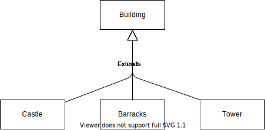
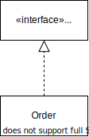
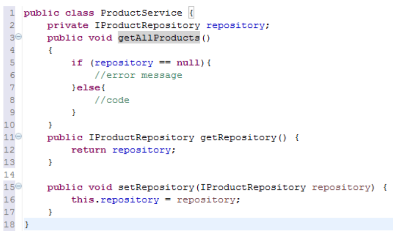
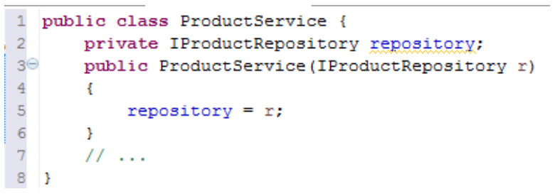
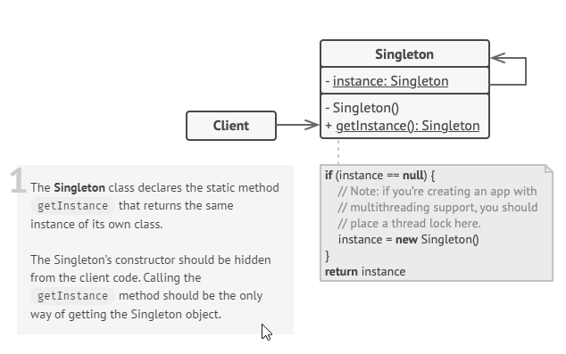
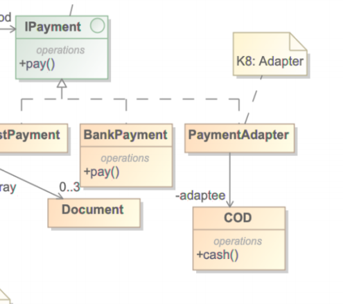
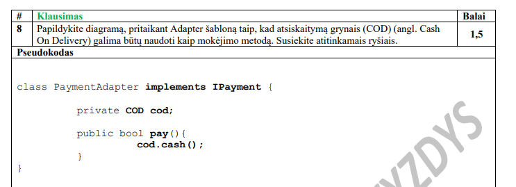
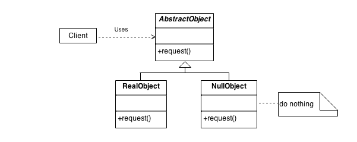
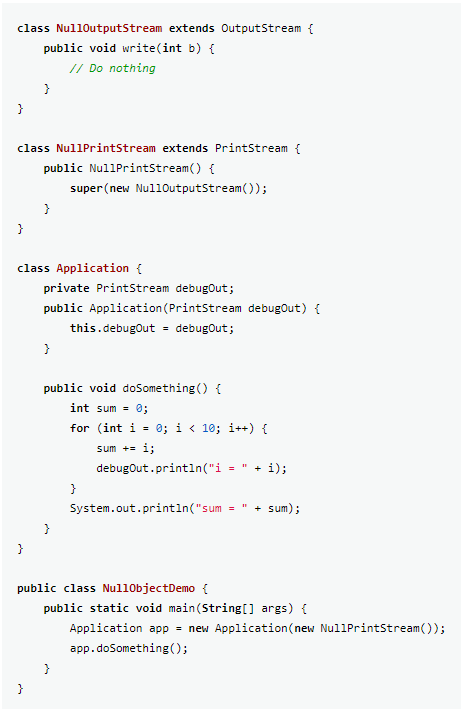

Aggregation refers to the formation of a particular class as a result of one class being aggregated or built as a collection. For example, the class “library” is made up of one or more books, among other materials. In aggregation, the contained classes are not strongly dependent on the lifecycle of the container. In the same example, books will remain so even when the library is dissolved.
That is, the contained class will be obliterated when the container class is destroyed. For example, a shoulder bag’s side pocket will also cease to exist once the shoulder bag is destroyed.
Dependency is called a supplier - client relationship, where supplier provides something to the client, and thus the client is in some sense incomplete while semantically or structurally dependent on the supplier element(s). Modification of the supplier may impact the client elements.
A generalization is a binary taxonomic (i.e. related to classification) directed relationship between a more general classifier (superclass) and a more specific classifier (subclass).
The relationship between the interface and the implementing class
The constructor replaced with a property providing dependency via properties rather than the constructor
Move the responsibility of creating ProductRepository implementation out of the ProductService class
| Multiplicity | Alternative | Cardinality |
|---|---|---|
| 0..0 | 0 | Collection must be empty |
| 0..1 | No instances or one instance | |
| 1..1 | 1 | Exactly one instance |
| 0..* | * | Zero or more instances |
| 1..* | At least one instance | |
| 5..5 | 5 | Exactly 5 instances |
| m..n | At least m but no more than n instances |
Singleton UML
Singleton code implementation
class Singleton
{
// static variable single_instance of type Singleton
private static Singleton single_instance = null;
// private constructor restricted to this class itself
private Singleton(){}
// static method to create instance of Singleton class
public static Singleton getInstance()
{
if (single_instance == null)
single_instance = new Singleton();
return single_instance;
}
}
Adapter UML
Adapter code implementation
Null object UML
Null object code implementation
An invariant - is a constraint that must always be met by all instances of the class, type, or interface. Invariants must be true all the time.
A precondition to an operation is a restriction that must be true at the moment the operation is going to be executed.
A postcondition to an operation is a restriction that must be true at the moment the operation has just been executed.